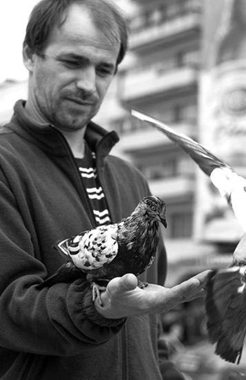
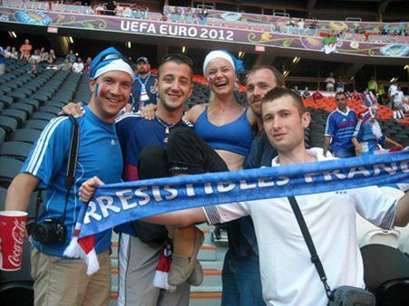
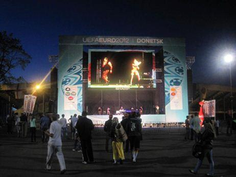
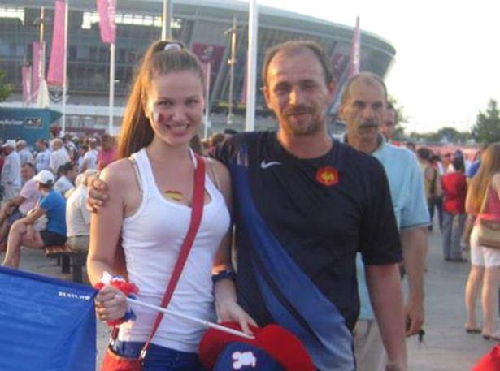
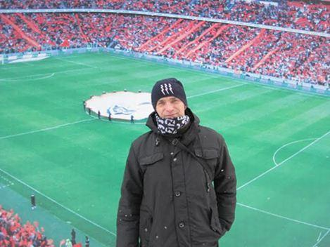

Français, natif de Grenoble, j’ai vécu à Donetsk de 2012 à 2014. Pour moi Donetsk reste un très grand souvenir. J’y possède encore des amis, ainsi que dans le Donbass : à Dimitrov, Zaïtsevo, Makeevka, Lugansk.
J’aime beaucoup cette ville de Donetsk. J’y suis arrivé un jour de mars 2012 pour rencontrer une personne avec qui j’avais fait connaissance par le biais d’Internet.
Pour moi, grand amateur de sport, Donetsk c’était Sergueï Bubka et ses records de saut à la perche qu’il détiendra longtemps. J’avais eu l’occasion de rencontrer Sergueï Bubka lors d’un match de rugby à Grenoble. On avait échangé quelques mots autour d’un verre. Donetsk c’était aussi pour moi le Shaktar Donetsk, grand club de foot avec son capitaine Darijo Srna et son entraineur Mircea Lucescu.
Je connaissais très peu cette ville. Je savais que c’était une ville industrielle, mais à vrai dire en France les journalistes parlait très peu de l’Ukraine à cette époque-là, même si l’Euro 2012 allait avoir lieu quelques mois après mon arrivée, et que la ville de Donetsk allait accueillir des matchs de l’Euro dont les matchs de poule de l’équipe de France contre l’Angleterre et contre l’Ukraine.
Mon arrivée à Donetsk a commencé par un long périple qui m’a mené de l’aéroport de Lyon jusqu’à Bucarest en Roumanie, de Bucarest à Chisinau en Moldavie en train, et en minibus de Chisinau à Odessa. Arrivé à Odessa j’ai pris le train à destination de la ville de Dniepropetrovsk, puis enfin, un dernier train en direction de Donetsk où je suis arrivé à 7h00 du matin avec un froid glacial qui m’a mis de suite dans l’ambiance.
Mon premier souvenir de Donetsk est la gare en travaux en préparation de l’Euro 2012. Ensuite j’ai découvert la grande statue de Lénine au cœur de la place du même nom.
Initialement j’étais venu pour 15 jours à Donetsk. Pourtant je vais rester presque 2 ans dans cette ville surprenante. Il suffit de déambuler dans le parc de Chtcherbakov ou d’aller sur la place de Lénine pour combien les habitants de Donetsk aiment leur ville. Donetsk était une ville très propre, plus propre que ma ville de Grenoble.
Quand est venu l’Euro 2012, j’ai vu des gens heureux d’accueillir des peuples de tous les pays pour un évènement majeur. J’ai était très déçu que le gouvernement français refuse de venir en Ukraine pour l’Euro 2012, car il voulait protester contre la peine de prison infligée à Iulia Timochenko. Il y avait une telle propagande de la part des medias français. Des intellectuels français ont appelé au boycott de l’Euro 2012 pour protester contre la peine de prison d’Iulia Timochenko. Il y a même eu une opération de propagande pour dire que des chiens errants des rues étaient enlevés pour être brûlés. Le message sous-entendu était : « Ne venez pas en Ukraine, regardez ce qu’ils font ! ».
À l’Euro 2012, les gens qui ont visité Donetsk ont adoré. Nous avons fait des soirées avec des Français, des Ukrainiens, des Russes et des Anglais. Que de merveilleux souvenirs dans la « fan zone » durant cet Euro 2012. D’ailleurs je conseille aux dirigeants occidentaux de regarder les vidéos de la « fan zone » de Donetsk lors du match Ukraine-Suède. La zone des supporters était remplie de monde, des drapeaux ukrainiens de tous les côtés ainsi que la chanson « Viva Ukrainia » qui résonnait partout pour soutenir l’équipe nationale d’Ukraine. L’Ukraine a gagné 2 à 1 et à chaque but du joueur mythique du dynamo de Kiev Andrei Chevtchenko, la « fan zone » s’est embrasée avec des « Vivas Ukrainiens » et un feu d’artifice.
Tous les habitants de Donetsk, et plus largement du Donbass, soutenaient leur équipe nationale et ne cachaient pas leur fierté d’être Ukrainiens. Cette vision d’un peuple uni dément totalement les propos des medias occidentaux selon lesquels le peuple du Donbass n’aurait jamais aimé les Ukrainiens. Je peux le confirmer pour y avoir vu de mes propres yeux. Certes le peuple du Donetsk et du Donbass n’a pas accepté le putsch de Kiev mis en place par l’occident, dont les USA et mon propre gouvernement. Ces derniers apportent leur soutien à un régime qui tue et participe au génocide dans le Donbass avec la complicité des groupes pétroliers tels que la Royal Dutch Shell, l’Italie Eni, Chevron, Exxon Mobil.
Obligé de répondre à une convocation au tribunal de Grenoble, il m’a fallu quitter Donetsk, à regret, en janvier 2014. Masi sans cela, je serais certainement resté, y compris dans ce période de guerre. Malgré mon retour en France, je n’ai toutefois jamais abandonné le peuple du Donbass. J’ai commencé à faire des recherches sur les groupes pétroliers et cela m’a permis de mieux comprendre les raisons du Maïdan. Je suis ainsi allé de découverte en découverte concernant ces groupes. Le fait d’avoir croisé des dirigeants du groupe Eni à Donetsk en janvier 2014 sur la place de Lénine m’avait mis la puce à l’oreille. Je les connais bien car j’ai travaillé 7 ans pour eux, et généralement quand ils mettent les pieds quelque part ça se finit mal. Le groupe Eni, dont l’État italien est actionnaire, a l’habitude de payer pour créer des conflits, à l’instar des cadres de la Royal Dutch Shell, groupe anglo-néerlandais, présents dans la région de Slaviansk et omniprésents durant le Maïdan. Fait étonnant 12 personnes de la Royal Dutch Shell se trouvait à bord du MH 17 abattu dans le Donbass à l’endroit précis où la Royal Dutch Shell devait forer le gaz de schiste. Il y a donc manifestement un lien entre cette guerre, le génocide du peuple du Donbass et le gaz de schiste.
Je possède des preuves qui mettent en cause Royal Dutch Shell et tous ces groupes pétroliers, à savoir que la société Burisma Holdings dirigée par Igor Kolomoiskiy a intégré dans son groupe le fils de Joe Biden, ainsi que le beau-fils de John Kerry, le fameux Christopher Heinz.
Cette guerre est donc bien voulue par l’occident, dont mon pays la France et son gouvernement pour qui j’éprouve de la haine, du mépris. Depuis le début de la guerre dans le Donbass, je me bats contre les autorités françaises pour dénoncer ça et ça m’a couté cher : 3 mois de prison ferme et 3 mois de prison avec sursis en France pour avoir dénoncé les massacres au Donbass. Je m’en suis indigné à maintes reprises à un politique français, le député socialiste Michel Destot, membre de la commission des affaires étrangères de l’Assemblée nationale française. Je lui ai écrit et fournit des photos et des vidéos de ce qui se passait au Donbass. Il a porté plainte contre moi car ce cher monsieur est en plein conflit d’intérêt avec Kiev. Les sociétés dans lesquels travaillent ses fils ont des contrats avec Kiev. Il se tait volontairement, et le gouvernement français accepte les mensonges de Kiev et ferme les yeux sur les massacres dans le Donbass par soumission à l’UE et aux USA. J’ai beau être Français, je suis contre ça, mon camp est choisi depuis longtemps : c’est le peuple du Donbass contre la France. Aussi, même si je dois retourner en prison pour mon combat pour la vérité, je continuerai de dire que des choses très graves se passent dans le Donbass, et que la France, la patrie des droits de l’homme, se tait et cautionne un génocide.
Mon cœur est au Donbass, pas en France. J’attends que les sanctions contre moi soient levées par la justice française, et je vais dans le Donbass pour aider à reconstruire, et, avec mon LCF2 pompier, soulager les pompiers du Donbass.
Ma vision du Donbass est celle d’un peuple qui est fort et courageux et une ville de Donetsk qui malgré les bombardements, essaie de rester propre et de garder espoir. Il y a un grand hommage à rendre à tous ces soldats, à ces pompiers et personnels hospitaliers, à ces professeurs des écoles qui donnent le meilleur d’eux même pour soutenir les enfants, et tant de personnes qui se dévouent tous les jours pour Donetsk et le Donbass.
Je suis prêt à remettre aux autorités du Donbass toutes les preuves accusant le gouvernement français, les groupes pétroliers et tant d’autres pour le génocide sur le Donbass de tout cœur avec le peuple du Donbass et de Donetsk que je me refuse à oublier.
Partager cette page